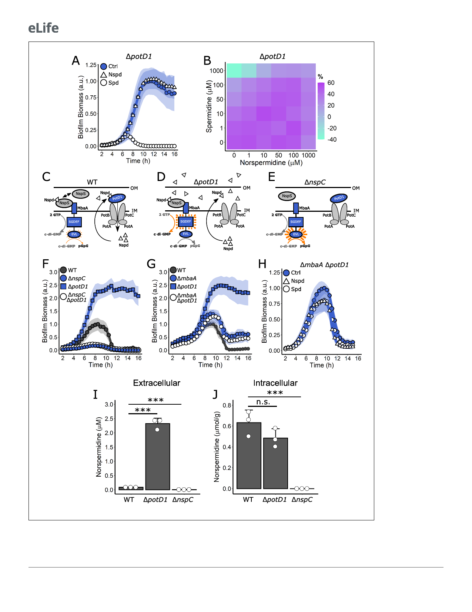

Research article
Microbiology and Infectious Disease
Figure 5. Polyamine import is not required for MbaA regulation of V. cholerae biofilm dispersal but is required to reduce external norspermidine levels.
(A) Quantitation of biofilm biomass over time measured by time-lapse microscopy following addition of water (Ctrl), 100 mM norspermidine, or 100 mM
Figure 5 continued on next page
11 of 20